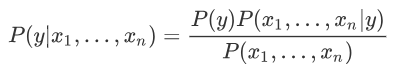
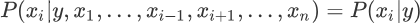
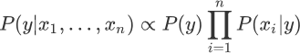
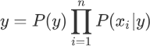

朴素贝叶斯分类算法原理
在《通俗地理解贝叶斯公式（定理）》一节，我们基本认识了“贝叶斯定理”。在此基础之上，这一节我们将深入讲解“朴素贝叶斯算法”。
我们知道解决分类问题时，需要根据他们各自的特征来进行判断，比如区分“一对双胞胎不同之处”，虽然他们看起来相似，但是我们仍然可以根据细微的特征，来区分他们，并准确地叫出他们的名字。就像一句非常有哲理的话，“世界上没有完全相同的两片树叶”，因此被分类的事物会存在许多特征。
比如现在有 A1 和 A2 两个类，其中 A1 具有 b、c 两个特征，A2 具有 b、d 两个 特征，如果是你会怎么区分这两个类呢？很简单看看是存在 c ，存在的就是 A1，反之则是 A2。但是现实的情况要复杂的多，比如 100 个 A1样本中有 80% 的样本具有特征 c，而且剩余的 20% 具有了特征 d，那么要怎么对它们分类呢？其实只要多加判断还是可以分清，不过要是纯手工分类，那就恐怕得不偿失了。
下面我们使统计学的相关知识解决上述分类问题，分类问题的样本数据大致如下所示：
上述思路就是贝叶斯定理的典型应用，如果使用条件概率表达，如下所示：
数据集有时并不是很完全的，总会因为某些原因存在一些缺失和收集不全的现象，所以特征 x 越多这个问题就会越突出，统计这些特征出现的概率就越困难。为了避免这一问题，朴素贝叶斯算法做了一个假设，即特征之间相互独立，互不影响，由此以来，就可以简化为以下式子来求解某个特征的似然度：
“朴素贝叶斯算法”利用后验概率进行预测，其核心方法是通过似然度预测后验概率。在使用朴素贝叶斯算法解决分类问题，其实就是不断提高似然度的过程，你可以理解为后验概率正比于似然度，如果提高了似然度，那么也会达到提高后验概率的目的，记做如下式子：
每个类与特征的似然度是不同的，也就是 P(xi|y) 不同，因此某一类别中某个特征的概率越大，我们就更容易对该类别进行分类。根据求解后验概率的公式，可以得出以下优化方法：
此时将后验概率记做类别 y，我们知道 P(y) 是一个固定的概率值，因此要想让 y 取得最大值，只能通过 P(xi|y) 实现，不妨把被统计的数据看成是一张大表格，朴素贝叶斯算法就是从中找到 P(xi|y) 值最大的那一项，该项对应的 y 是什么，则最终输出的预测结果就是什么。
我们知道解决分类问题时，需要根据他们各自的特征来进行判断，比如区分“一对双胞胎不同之处”，虽然他们看起来相似，但是我们仍然可以根据细微的特征，来区分他们，并准确地叫出他们的名字。就像一句非常有哲理的话，“世界上没有完全相同的两片树叶”，因此被分类的事物会存在许多特征。
比如现在有 A1 和 A2 两个类，其中 A1 具有 b、c 两个特征，A2 具有 b、d 两个 特征，如果是你会怎么区分这两个类呢？很简单看看是存在 c ，存在的就是 A1，反之则是 A2。但是现实的情况要复杂的多，比如 100 个 A1样本中有 80% 的样本具有特征 c，而且剩余的 20% 具有了特征 d，那么要怎么对它们分类呢？其实只要多加判断还是可以分清，不过要是纯手工分类，那就恐怕得不偿失了。
多特征分类问题
统计学是通过搜索、整理、分析、描述数据等手段，以达到推断、预测对象的本质，统计学用到了大量的数学及其它学科的专业知识，其应用范围几乎覆盖了社会科学和自然科学的各个领域。下面我们使统计学的相关知识解决上述分类问题，分类问题的样本数据大致如下所示：
[特征 X1 的值,特征 X2 的值,特征 X3 的值,......,类别 A1] [特征 X1 的值,特征 X2 的值,特征 X3 的值,......,类别 A2]解决思路：这里我们先简单的采用 1 和 0 代表特征值的有无，比如当 X1 的特征值等于 1 时，则该样本属于 A1 的类别概率；特征值 X2 值为 1 时，该样本属于类别 A1 的类别的概率。依次类推，然后最终算出该样本对于各个类别的概率值，哪个概率值最大就可能是哪个类。
上述思路就是贝叶斯定理的典型应用，如果使用条件概率表达，如下所示：
P(类别A1|特征X1，特征X2，特征X3，…)
上述式子表达的意思是：在特征 X1、X2、X3 等共同发生的条件下，类别 A1 发生的概率，也就是后验概率，依据贝叶斯公式，我们可以使用似然度求解后验概率，某个特征的似然度如下：P(特征X1|类别A1，特征X2，特征X3，…)
但是要收集对个特征值共同发生的情况，这并不容易，因此我们就需要使用“朴素”贝叶斯算法。朴素贝叶斯算法
上一节我们已经了解了贝叶斯公式，下面使用贝叶斯公式将多特征分类问题表达出来，如下所示：

数据集有时并不是很完全的，总会因为某些原因存在一些缺失和收集不全的现象，所以特征 x 越多这个问题就会越突出，统计这些特征出现的概率就越困难。为了避免这一问题，朴素贝叶斯算法做了一个假设，即特征之间相互独立，互不影响，由此以来，就可以简化为以下式子来求解某个特征的似然度：


上述式子中∝表示正比于，而∏则是连乘符号（即概率相乘）表示了不同特征同时发生的概率。朴素贝叶斯优化方法
你也许会发现，在学习过朴素贝叶斯的过程中，我们并内提到“假设函数”和“损失函数”，其实这并不难理解。朴素贝叶斯算法更像是一种统计方法，通过比较不同特征与类之间的似然度关系，最后把似然度最大的类作为预测结果。每个类与特征的似然度是不同的，也就是 P(xi|y) 不同，因此某一类别中某个特征的概率越大，我们就更容易对该类别进行分类。根据求解后验概率的公式，可以得出以下优化方法：

此时将后验概率记做类别 y，我们知道 P(y) 是一个固定的概率值，因此要想让 y 取得最大值，只能通过 P(xi|y) 实现，不妨把被统计的数据看成是一张大表格，朴素贝叶斯算法就是从中找到 P(xi|y) 值最大的那一项，该项对应的 y 是什么，则最终输出的预测结果就是什么。
关注公众号「站长严长生」，在手机上阅读所有教程，随时随地都能学习。内含一款搜索神器，免费下载全网书籍和视频。

微信扫码关注公众号